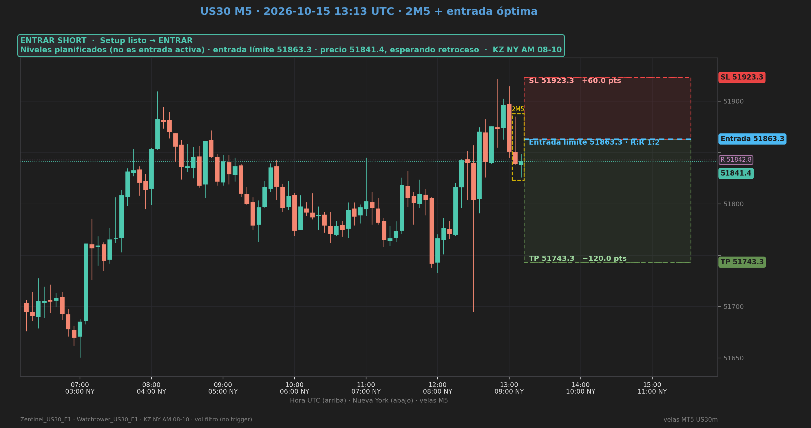

| Precio | 51841.4 |
|---|---|
| Veredicto | Entrar (SHORT) |
| Entrada óptima | 51863.3 |
| ICT | 51834.4→51863.3 · Refinada 51834.4→51863.3 (OB BEARISH edge) · Sweep swing_high @ 51831.8 + reclaim · PD PREMIUM · H1 INSIDE_RANGE · killzone NY AM 08-10 |
| Plan | Entry 51863.3 · SL 51923.3 · TP 51743.3 |
| E2 / Break | BREAK / E1 — Sin reversión E2 — E1 primario |
| Métricas | Rules 83% · Neural 72% · ML 100.0% · Confluencia MEDIA — 66% · Rules 83%; Neural gated 64% (medium); ML 100% (high); 2M5 no listo; Break operable |
| Historial ref | us30-070 · 2026-10-14 15:13 NY · Entry 51471.5 · REGULAR — precio cerca de Entry actual; sin 2M5; zona OK · (MÁS CERCA) · Δ Entry +391.8 pts (+0.761%) · precio→última 369.9 pts (0.719%) · precio→actual 21.9 pts (0.042%) |
| Bando usado (lado asumido) | BEARISH |
| Bando mercado (H1) | BULLISH |
| R:R | 1:2 |
| Dist. a Entry | +21.9 pts (0.042%) |
| Dist. a SL | +81.9 pts (0.158%) |
| Dist. a TP | -98.1 pts (0.189%) |
| Riesgo (pts) | 60.0 |
| Winrate setup | ~64% — histórico E1 BTC · SHORT en PREMIUM +2 (zona a favor); H1 BULLISH vs SHORT -6; acuerdo MEDIA -2; patron WIN similar +3; 83% reglas |
| Zona PD vs dirección | SHORT en PREMIUM +2 (zona a favor) |
| Bias vs dirección | H1 BULLISH vs SHORT -6 |
| Score Rules extendido | 80% |
| Estado 2M5 | Sin 2M5 (info, no gate) |
| Bias H1 vs bando | H1 BULLISH · CLI BEARISH |
| Calidad break/reverse | BREAK (continuación E1) |
| Neural grade/conf | B · conf. medium · 72% WIN |
| Rules E1 detalle | 5/6 (83%) |
| Vol Zentinel (filtro) | normal · 0.74× · Zentinel_US30_E1 |
| MACD-quant (filtro) | OK · Hist -23.55 · never trigger |
| Watchtower KZ | NY AM 08-10 · Watchtower_US30_E1 |
| Chart | Preview en navegador |
